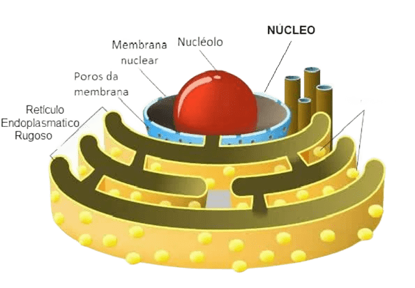
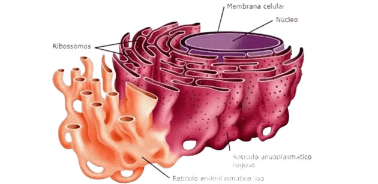
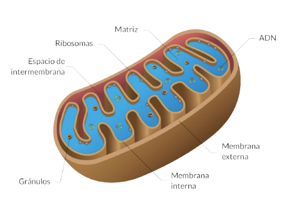
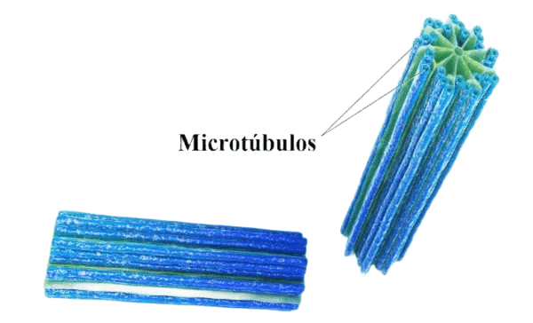

Núcleo
O núcleo é a região da célula onde se encontra o material genético (DNA) da celula animal. É considerado uma organela celular membranosa, ou seja, possui um envoltório similar a membrana plasmática. A existência desse envelope faz com que o material genético fique guardado em seu interior
Nucléolo
O nucléolo é uma estrutura celular que está presente no núcleo da célula animal. Em cada núcleo geralmente existe somente um nucléolo. O nucléolo é uma das mais importantes organelas presentes no núcleo das células eucariontes. No nucléolo das células são produzidos os RNA's ribossômicos. Portanto, a função mais importante dessas estruturas é auxiliar na produção de RNA.
Membrana Plasmática
A membrana plasmática ou membrana celular é uma categoria de organela celular. Trata-se de um envoltório fino, poroso e microscópico. A membrana plasmática é uma estrutura semipermeável, responsável pelo transporte e seleção de substâncias que entram e saem da célula. Por isso ela é de extrema importância para o metabolismo celular.
Citoplasma
O citoplasma é a região da célula onde se encontra o núcleo e as organelas, além de outras estruturas com funções específicas. É formado por uma substância fluida constituída principalmente por água, proteínas, sais minerais, carboidratos e organelas celulares.O citoplasma é essencial para manter a célula viva, pois cria um ambiente favorável onde ocorrem as reações químicas, o transporte e o armazenamento de substâncias importantes.
Ribossomos
Os Ribossomos, também chamados de Ribossomas, são pequenas estruturas em forma de grânulos que estão presentes nas células animais. A função dos ribossomos é auxiliar na produção e na síntese das proteínas nas células. Além dele, participam desse processo as moléculas de DNA e RNA.
Retículo Endoplasmático
O retículo endoplasmático é uma organela membranosa relacionada com a produção de moléculas orgânicas. Existem 2 tipos de retículo: o liso e o rugoso, ambos possuem formas e funções distintas. O rugoso possui ribossomos nas suas paredes externas e é responsável pela síntese de proteínas, enquanto o liso pela produção de lipídios. Os retículos são estruturas membranosas compostas de sacos achatados localizados no citosol da célula.
Complexo de Golgi
O Complexo de Golgi ou Aparelho de Golgi, ou ainda Complexo Golgiense, é uma organela de células animais, composta de discos membranosos achatados e empilhados. Suas funções são modificar, armazenar e exportar proteínas sintetizadas no retículo endoplasmático rugoso e além disso, origina os lisossomos e os acrossomos dos espermatozoides.
Lisossomos
Os lisossomos são estruturas esféricas delimitadas pela membrana formada por uma camada lipoproteica. Essas organelas contêm muitas enzimas que lhes permite degradar um grande número de substâncias. As enzimas são peptidases (digerem aminoácidos), nucleases (digerem ácidos nucleicos), lipases (digerem lipídios), entre outras. Como essas enzimas hidrolases funcionam em ambiente ácido, a digestão ocorre dentro dos lisossomos para não prejudicar a célula
Mitocôndria
A sua função é produzir a maior parte da energia das células, através do processo chamado de respiração celular. O tamanho, a forma, a quantidade e a distribuição das mitocôndrias variam de acordo com o tipo de célula. Elas ainda possuem o seu próprio material genético. Agora explicando o que é a respiração celular. A respiração celular é um processo de oxidação de moléculas orgânicas, tais como ácidos graxos e glicídeos, em especial a glicose, que é a principal fonte de energia utilizada pelos organismos heterotróficos.
Centríolos
Trata-se de um tipo de organela citoplasmática que exerce uma função muito importante nas células animais Os centríolos são estruturas celulares que auxiliam na divisão celular (mitose e meiose). Possuem, portanto, a capacidade de duplicação durante o ciclo da divisão celular, organizando o fuso acromático. Após o processo de duplicação, os centríolos migram em direção aos polos da célula. Além disso, eles auxiliam na formação dos cílios e dos flagelos.
Peroxissomos
Os peroxissomos exercem funções importantes no interior das células, uma vez que apresentam enzimas digestivas responsáveis por oxidar substâncias orgânicas. Os peroxissomos são pequenas estruturas em formato arredondado os quais estão envoltos por uma membrana lipoproteica. Em seu interior contém enzimas oxidases, responsáveis pela oxidação de substâncias.
Vacúolos Digestivos
Esses vacúolos realizam a digestão intracelular e estão presentes em protozoários e em células animais e humanas como os macrófagos. No interior do vacúolo digestivo as enzimas do lisossomo farão a digestão e depois os restos serão eliminados para fora da célula. Nas células de defesa do corpo humano acontece situação semelhante. Os agentes invasores, por exemplo bactérias ou vírus, são fagocitados e digeridos dentro dos vacúolos digestivos.